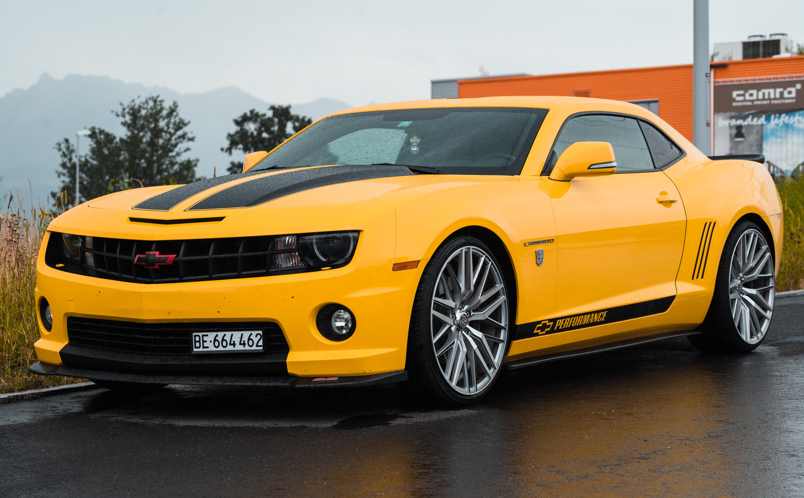

高級車
テスラ
アウディ
ベンツ
高級車
相対的に、ブランド性やポジショニング、品質（クオリティー）が高く、いわゆる高級であると認識される乗用車のことである。 「高級車は高額」という認識が一般的であるが、それは相対的なもので、大型自動車や特殊自動車などを例にするまでもなく、絶対的な高額と高級とがイコールであるとは限らない。 
Please enable JavaScript to view the
comments powered by Disqus.